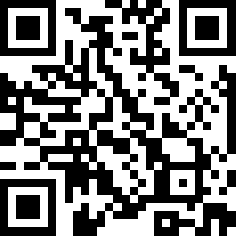

Puntos de quiebre, adaptación móvil–tablet–escritorio, patrones de navegación en distintos dispositivos.
Abran 
Esto no es un accidente, es diseño responsivo puro. En la industria tecnológica actual, nadie diseña una aplicación pensando en una sola pantalla. El mercado laboral exige diseñadores capaces de crear experiencias que funcionen perfecto tanto en un iPhone pequeño como en un monitor gigante de escritorio. Las empresas pierden millones si un usuario no puede navegar cómodamente en su dispositivo favorito.
Al terminar este módulo, van a dejar de pensar en "pantallas estáticas" y van a entender el diseño como un ecosistema fluido. Lograrán identificar exactamente en qué momento una interfaz debe transformarse, cómo reorganizar el contenido sin perder la esencia de la app, y construirán sus propias pantallas adaptables.
Objetivos de aprendizaje
- 🔍 Identificar los puntos de quiebre (breakpoints) estándar de la industria para diferenciar resoluciones de móvil, tablet y escritorio en productos digitales reales.
- 🧱 Aplicar técnicas de reestructuración espacial para adaptar una misma interfaz a distintos tamaños de pantalla sin perder jerarquía visual.
- ⚖️ Comparar los diferentes patrones de navegación móvil y de escritorio, evaluando cuál es el más eficiente según el espacio disponible.
- 🛠️ Construir una pantalla de alta fidelidad en Figma que demuestre una adaptación funcional y estética entre sus versiones de móvil y escritorio.
Diseño Responsivo
¿Qué es un punto de quiebre?
Para entender los puntos de quiebre, usemos una analogía de la física. Imaginen el agua: si bajamos la temperatura, a los 0 °C exactos, el agua líquida hace un "quiebre" y se convierte en hielo. Un punto de quiebre en diseño (o breakpoint) es exactamente eso: una medida específica (en píxeles) donde la pantalla es tan grande o tan pequeña que el diseño actual ya no funciona, y la interfaz hace un "quiebre" para transformarse en una nueva estructura.
Analogía: el agua
Haz clic para ver la conexión con el diseño
Así como el agua se transforma en hielo a 0 °C, una interfaz se transforma a ciertos píxeles de ancho.
 Ejemplo: Spotify
Ejemplo: Spotify
Si usan el reproductor web en una ventana pequeña, verán la lista de canciones ocupando todo el ancho. Si empiezan a estirar la ventana horizontalmente, llegará un píxel exacto (generalmente cerca de los 1 024 px) donde la pantalla "se quiebra" y de repente aparece un panel lateral izquierdo permanente con tus playlists y un panel derecho con la actividad de tus amigos.
Rangos de pantalla estándar
Pasa el cursor por cada rango para ver el detalle.
Móvil
320 – 767 px
Tablet
768 – 1 023 px
Escritorio
1 024 px+
Error frecuente
Diseñar pensando en el modelo exacto de su propio celular (ejemplo: hacer todo a 390 px porque tienen un iPhone 12) y olvidar que el diseño debe funcionar en rangos intermedios.
Pro tip
No diseñen para dispositivos específicos, diseñen para rangos: Móvil 320–767 px · Tablet 768–1 023 px · Escritorio 1 024 px+.
 Ejemplo del mundo real: YouTube
Ejemplo del mundo real: YouTube
 Ejemplo: TikTok
Ejemplo: TikTok
 Ejemplo: Discord
Ejemplo: Discord
 Ejemplo: Wikipedia
Ejemplo: Wikipedia
Actividades prácticas
Actividad 1: Relaciona los conceptos de diseño responsivo
Arrastra el deslizador para simular diferentes anchos de pantalla. Observa atentamente cómo la app de ejemplo adapta sus patrones (diseño responsivo) y responde las preguntas debajo.
Feed Principal
🧐 Identificación de UI/UX Patterns:
1. El umbral técnico (768px) donde la estructura entera cambia por configuración CSS:
2. El ícono equivalente al Sidebar pero oculto/colapsable usado en móvil y tablets angostas:
3. Modificar de manera inteligente el contenido de 1 sola columna a varias columnas estilo grilla:
4. Patrón que reemplaza la navegación superior manteniéndose accesible al pulgar humano en teléfonos:
Actividad 2: Clasificación de patrones de diseño
Arrastra cada característica o patrón al dispositivo donde se utiliza con mayor frecuencia o representa su estándar ideal.
📱 Móvil
Arrastra aquí los patrones para móvil
🖥️ Escritorio / Tablet horizontal
Arrastra aquí los patrones de escritorio
Patrones y decisiones de diseño:
Evaluación. Preguntas de selección múltiple (marca la respuesta correcta)
Selecciona la respuesta correcta para cada pregunta sobre diseño responsivo, breakpoints y adaptación móvil–escritorio.
Recursos para profundizar
Para profundizar en el mundo del diseño UI/UX y las guías de estilo, te recomendamos explorar las siguientes herramientas y recursos:
-
Mobbin: Biblioteca gigantesca con capturas de pantalla reales de apps famosas en móvil y escritorio.
Ir al recurso
-
Responsive Design Checker: Página web donde simular instantáneamente cómo "se quiebra" la interfaz en pantallas diferentes.
Ir al recurso
Bibliografía
Crea diseños dinámicos con el diseño automático (auto layout). Centro de ayuda de Figma.
https://help.figma.com/hc/es/articles/360040451373-Crea-dise%C3%B1os-din%C3%A1micos-con-el-dise%C3%B1o-autom%C3%A1tico
El diseño web adaptable (responsive web design). MDN Web Docs.
https://developer.mozilla.org/es/docs/Learn/CSS/CSS_layout/Responsive_Design
Material design 3: Understanding layout and breakpoints. Material Design.
https://m3.material.io/foundations/layout/understanding-layout/overview
Responsive design. MDN Web Docs.
https://developer.mozilla.org/en-US/docs/Learn/CSS/CSS_layout/Responsive_Design